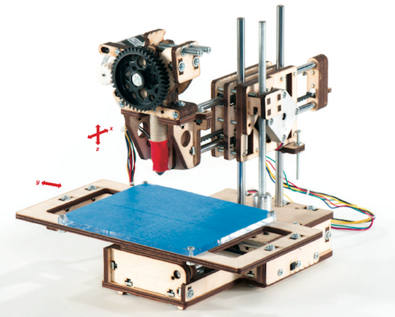
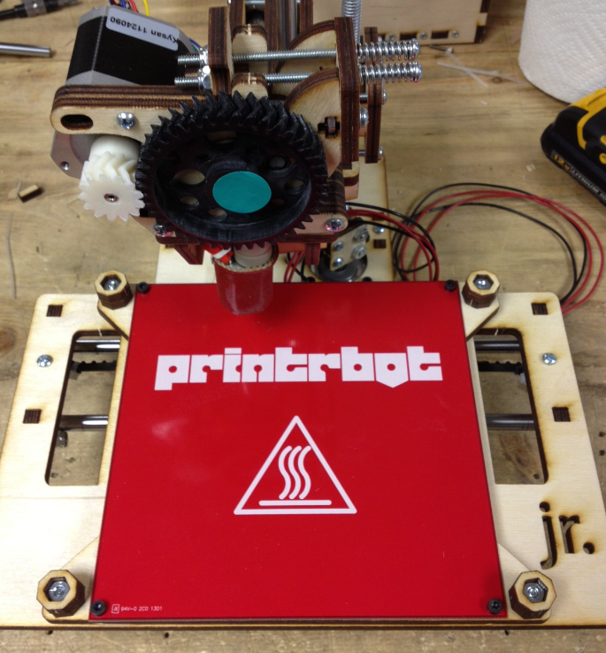

3D Printing
We ain't in 2D any more
Brought to you by @suziam / @makenai

What even is 3D Printing?
3D printing is a process of making a three-dimensional solid object of virtually any shape from a digital model. 3D printing is achieved using an additive process, where layers of material are laid down in different shapes.
- thanks Wikipedia!
Why on Earth should I care about this?

Because 3D Printing is going to make the future better

Revolutionising power!

"While installation is the dominate cost for solar power, it is estimated that precision 3D printing could drop production costs by 50%."
guardian.co.uk / gu.com/p/3exzx/twStraightening your teeths!

Invisalign braces are made with 3d printing!
3d Systems / bit.ly/13d52Nb3D printing on the moon!

"By using the Moon’s loose rocks (regolith) as a base for concrete, robots based on Monolite’s D-Shape 3-D printer will be able to build up a structure that uses as many local materials as possible."
Wired / bit.ly/YuAalrSparking a new industrial revolution!

"...the front lines of a new industrial revolution as today’s entrepreneurs, using open source design and 3-D printing, bring manufacturing to the desktop."
Buy the book / http://amzn.com/0307720950This is all so new fangled...

This is great! Let me explain what you can do.
You can print things in:
- Plastic
- Stainless Steel
- Silver
- Titanium
- Aluminium/plastic hybrid
- Ceramic (tea, earl grey, hot)
- Sandstone
- Glass
- Food
- Organic matter/cells
Layers

3D printing works by deposting lots of little layers of material on top of each other.
What can I print?
- Cats!
- Almost anything, size permitting.
- Complexity is free! Customisation is also free!
- Moving parts and fully assembled machines

3D Printer Anatomy

Belts + Pulleys
Screws Drive

Stepper Motor

Controller (Sanguinololu)

Filament

Extruder

Hobbed Bolt

Hot End

Print Bed

Great! Send me a printer via Amazon Prime right meow!

Woah. Woah.
Ask yourself:
- How much do I want to spend?
- How much space do I have for one?
- What do I want to use it for?
- How much do I care about style?
- Am I a tinkerer, or do I want it to 'just work'?
- Do I want to build my own?
- Do I want to support open source?
- Is ABS or PLA right for me?
Price range
Desktop home printers cost between $400 and $3500.
Price is not always an indicator, but as far as reliability and autonomy goes, the general rule is that you get what you pay for.
Lowest price: Printrbot Jr
Highest price: Formlabs Form 1
(as of Feb, 2013)
What is the deal with ABS and PLA?
They are both differing types of plastic you can buy to use with your 3D printer. ABS is the stuff Lego pieces are made of, and PLA is a corn derived non toxic plastic.
ABS
- Lego!
- Higher melting point - 437°F (225°C)
- Slightly stronger than PLA
- Available in many colours
- More expensive
- You need a heated print bed
- Resolution/detail is restricted
PLA
- Environmentally friendly
- Lower melting point - 356°F (180°C)
- Smells nice when printing
- Available in many colours
- No heated print bed needed
- Layer heights of as small as .1mm are possible
- Melty - not dishwasher safe mostly
- Not as strong as ABS
Still need help?
It's dangerous to go alone, take these:
3ders Printer Price Comparison - bit.ly/YuHYU8
Make: The Ultimate Guide to 3D Printing - bit.ly/YuIbqC

What if I don't want to buy a printer?

No wukkas!
There are online services where you can use someone else's printer!

Where can I find these services?
How does it work?
- Make model of your object
- Upload to an online printing service
- Order and pay
- F5 F5 F5 F5 F5 F5 F5
- Delivery!
Turnaround times vary from 2 weeks to 4 weeks, depending on material ordered.
3D Print Design School

Can't Get Enough?